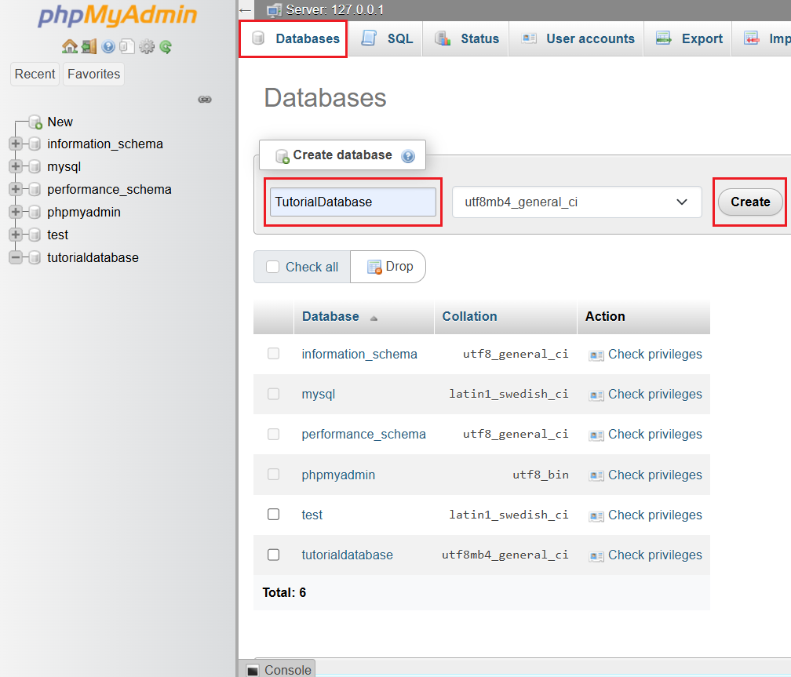
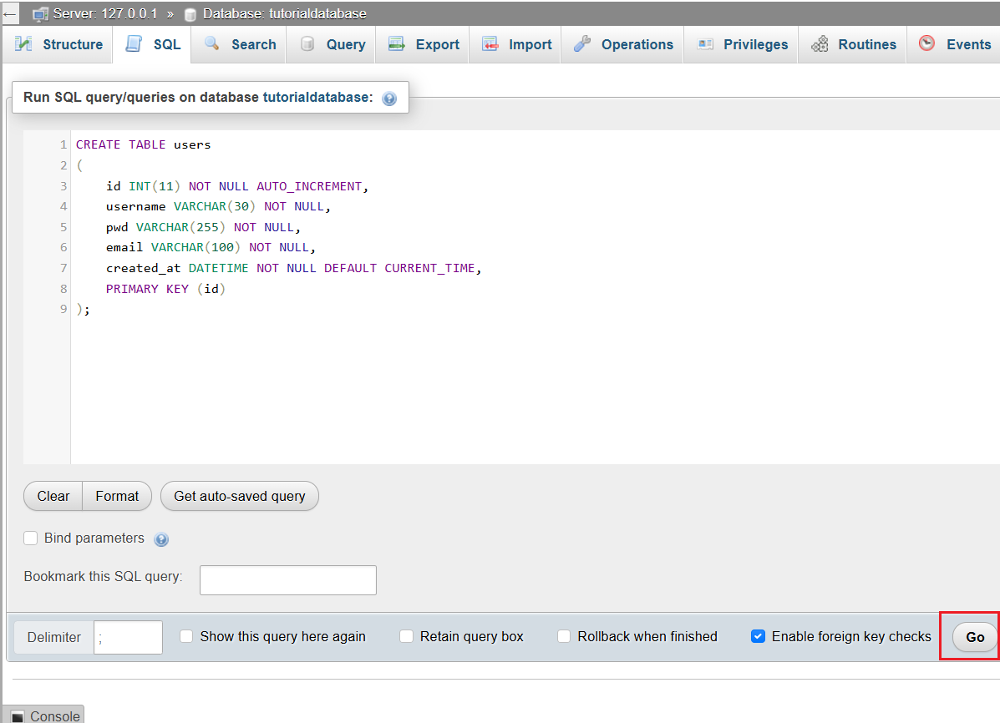
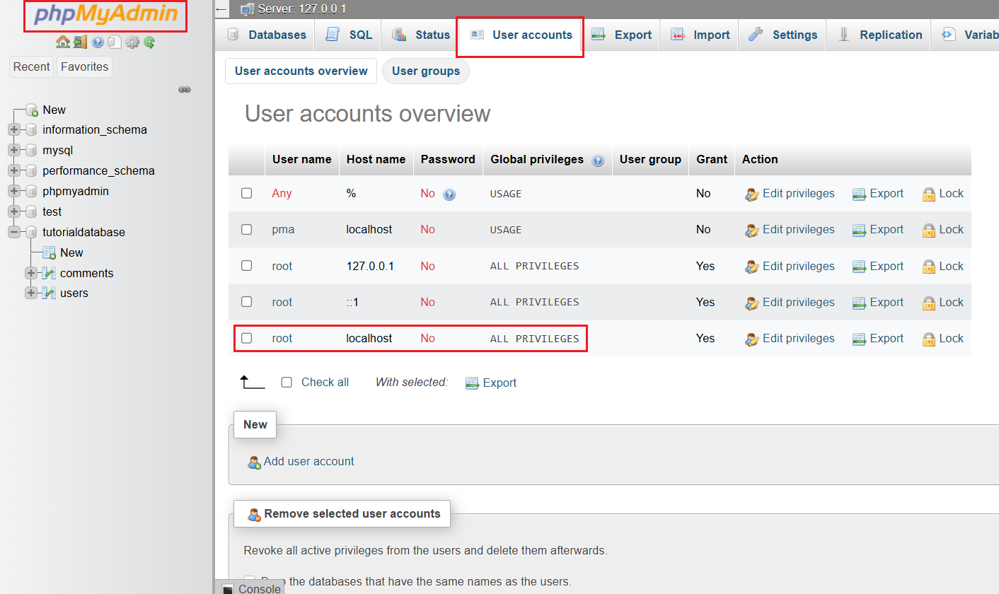
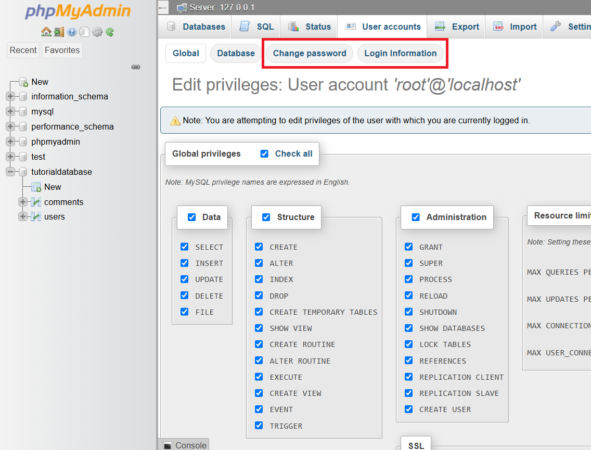

Setup Database
-
To access
phpmyadmin, use this url:http://localhost:8080/phpmyadmin(might differ based on port number). -
To create your own database, click on the
databasestab and enter your first database's name, everything else can be left as default. Clickcreateto create the database.
-
While you can use
phpmyadminto create tables in your database, it is preferred to do it manually usingSQL, as it can later be applied tophp. -
To write
SQLin your databse, make sure you're selecting the correct database >SQLtab at the top. -
To create a table:
CREATE TABLE users ( id INT(11) NOT NULL AUTO_INCREMENT, username VARCHAR(30) NOT NULL, pwd VARCHAR(255) NOT NULL, email VARCHAR(100) NOT NULL, created_at DATETIME NOT NULL DEFAULT CURRENT_TIME, PRIMARY KEY (id) );- Make sure
TABLEname is NOT using any built-in names in MYSQL. - Make sure vairable names are also NOT using any built-in names in MYSQL (e.g. password).
- Make sure
-
To save and run the database, click on the go button below.

-
To create a foreign key:
CREATE TABLE comments ( id INT(11) NOT NULL AUTO_INCREMENT, username VARCHAR(30) NOT NULL, comment_text TEXT NOT NULL, create_at DATETIME NOT NULL DEFAULT CURRENT_TIME, users_id INT(11), PRIMARY KEY (id), FOREIGN KEY (users_id) REFERENCES users (id) ON DELETE SET NULL );- When referencing a column from another table in current table, MUST be the same data type as in referenced table!
-
To insert data into database:
INSERT INTO users (username, pwd, email) VALUES ('Daniel', 'Password', 'Dandadan@gmail.com'); -
To update data in database:
UPDATE users SET username = 'Jane Doe', pwd = "P@ssw0rd" WHERE id = 2; -
To delete data in database:
DELETE FROM users WHERE id = 1; -
To select data in database:
SELECT username, email FROM users WHERE id = 2; /* To select everything */ SELECT * FROM users WHERE id = 2; -
To select data from multiple tables using primary / secondary keys:
SELECT * FROM users INNER JOIN comments ON users.id = comments.users_id; /* Result: Shows all users who made comments */ /* Left Join */ SELECT * FROM users LEFT JOIN comments ON users.id = comments.users_id; /* Result: Shows all users (including ones with no comments), but users with no comments will have NULL shown under comments */ /* Right Join*/ SELECT * FROM users RIGHT JOIN comments ON users.id = comments.users_id; /* Result: Shows all comments (including ones with no user), but comments with no user will have NULL shown under user */ -
To change stats for users, go to
phpMyAdmin > User Accountsand find the localhostHost Nameand rootUser Name. Select that.
-
You can change the login info for this user by clicking on
Login Informationnear the top. You can change theUsernameto anything you want, but DO NOT change the password directly here. There is a bug.
-
To change password, click on
Change Passwordtab near the top and do it there. -
To connect database to PHP website, there are 3 methods:
mysql(deprecated & unsafe. Do not use this.)mysqliPDO
-
Back to PHP,
pmtwebusesmysqli, so we'll be using that as well. Create a file namedconfig.phpand write this:<?php $host = "localhost"; $dbusername = "root"; $dbpassword = ""; $dbname = "tutorialdatabase"; $link = mysqli_connect($host, $dbusername, $dbpassword, $dbname); if (!$link) { die("Connection failed: " . mysqli_connect_error()); }- This uses the
mysqli_connectfunction to connect localhost totutorialdatabaseusing therootuser.
- This uses the
-
Congrats! You can start building your own website and send data into your database!